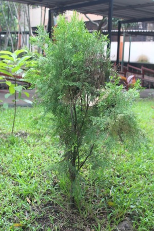

Arbol de Jardin 1
El cocotero (Cocos nucifera) es una especie de palmera de la familia Arecaceae. Es monotípica, siendo su única especie Cocos nucifera. Este género alguna vez tuvo muchas especies que se fueron independizando de este género, algunas hacia el género Syagrus, taxonómicamente hablando, las especies más próximas son Jubaeopsis caffra de Sudáfrica y Voanioala gerardii de Madagascar.Crece unos 30 metros o más y su fruto es el coco.